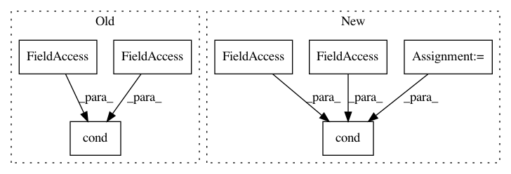

c3a2b85b98dc441f97703c426d5bd75568b0ce10,keras_rcnn/layers/losses/_rcnn.py,RCNNClassificationLoss,call,#RCNNClassificationLoss#,14
Before Change
def calculate_loss():
return self.compute_classification_loss(output, target)
loss = tensorflow.cond(keras.backend.not_equal(keras.backend.shape(output)[1], keras.backend.shape(target)[1]), no_loss, calculate_loss)
self.add_loss(loss, inputs)
return output
After Change
return self.compute_classification_loss(output, target)
x = keras.backend.shape(output)[1]
y = keras.backend.shape(target)[1]
predicate = keras.backend.not_equal(x, y)
loss = tensorflow.cond(predicate, no_loss, calculate_loss)
self.add_loss(loss, inputs)
return output
In pattern: SUPERPATTERN
Frequency: 3
Non-data size: 7
Instances
Project Name: broadinstitute/keras-rcnn
Commit Name: c3a2b85b98dc441f97703c426d5bd75568b0ce10
Time: 2017-11-14
Author: allen.goodman@icloud.com
File Name: keras_rcnn/layers/losses/_rcnn.py
Class Name: RCNNClassificationLoss
Method Name: call
Project Name: broadinstitute/keras-rcnn
Commit Name: c3a2b85b98dc441f97703c426d5bd75568b0ce10
Time: 2017-11-14
Author: allen.goodman@icloud.com
File Name: keras_rcnn/layers/losses/_rcnn.py
Class Name: RCNNRegressionLoss
Method Name: call
Project Name: tensorflow/models
Commit Name: 5cee7220217599ceccb191adf430eb914d148f87
Time: 2020-09-17
Author: tanzheny@google.com
File Name: official/vision/keras_cv/ops/box_matcher.py
Class Name: BoxMatcher
Method Name: __call__